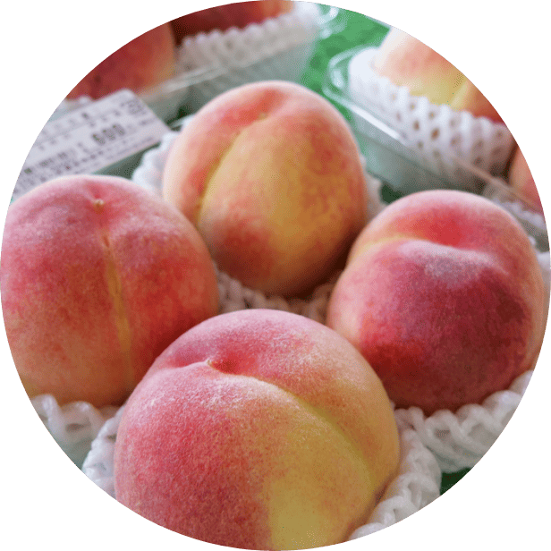
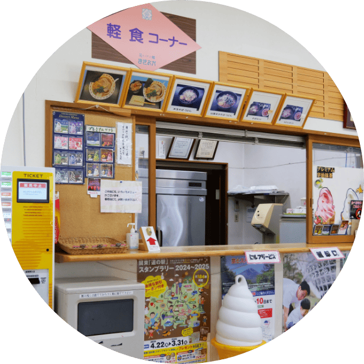
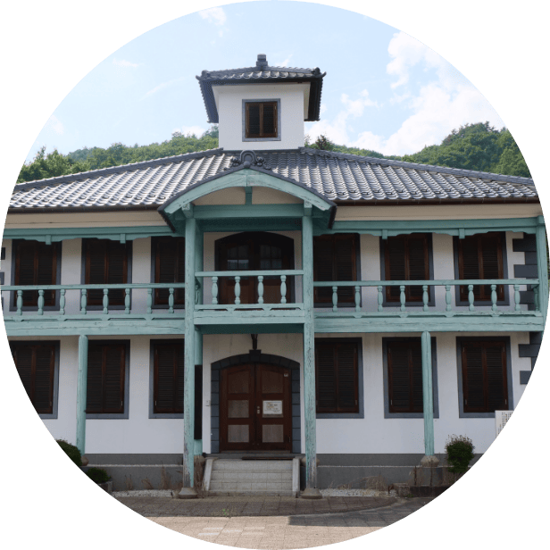
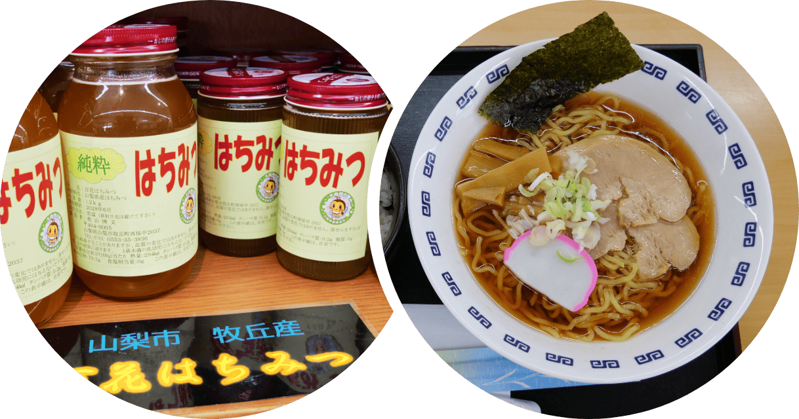
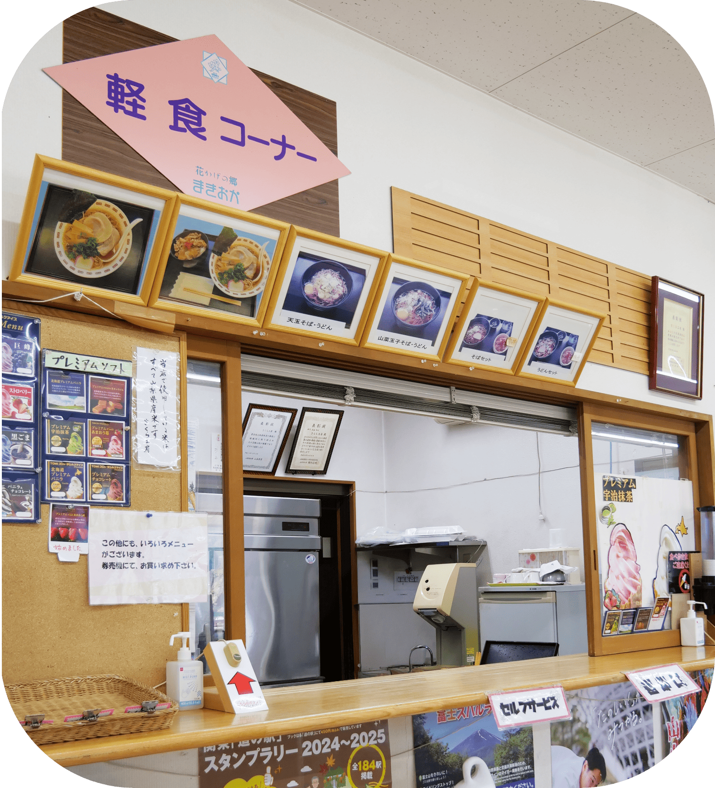

久しぶりの富士山は「まずはここから」
ホッと一息できる道の駅



山と風と、人のぬくもり。
花かげの郷まきおかへようこそ。
山梨県山梨市牧丘町に位置する「道の駅 花かげの郷まきおか」は、自然豊かな風景とともに、地域の魅力を五感で楽しめる施設です。地元産の新鮮な野菜や果物、特産品を揃えた直売所をはじめ、観光情報コーナーや休憩スペースも充実。季節ごとの風景とともに、訪れる人々に安らぎと発見を提供します。旅の途中に、地元のぬくもりにふれるひとときをお過ごしください。
山梨・牧丘だから味わえる、
採れたての美味しさ
山々に囲まれた清らかな水と昼夜の寒暖差が育む、牧丘ならではの果物と野菜。特に巨峰や桃、季節の山菜は、地元の畑から朝採れたてのものが並びます。その場で味わう料理も、素材の持ち味を活かしたやさしい味付け。「新鮮ってこういうことなんだ」と思わず感じていただけるはずです。
牧丘の恵みが詰まった新鮮な果物や野菜をはじめ、お土産にぴったりの特産品がずらり。
地元の素材を活かした手づくりの食事もご好評いただいています。旅のひとときに、美味しい出会いをどうぞ。


お知らせ
お知らせ
テキストが入ります。テキストが入ります。
お知らせ
テキストが入ります。テキストが入ります。
お知らせ
テキストが入ります。テキストが入ります。
休業日のご案内
アクセス ・ 営業時間
国道140号線雁坂トンネルから15ｋｍ
中央自動車道勝沼ICから車で30分
JR山梨市駅から車15分すぐ
JR中央本線山梨市駅より山梨市営バス西沢渓谷入口行きで30分道の駅停すぐ
営業時間 9時～17時半(季節により変更あり)
定休日 毎週水曜日